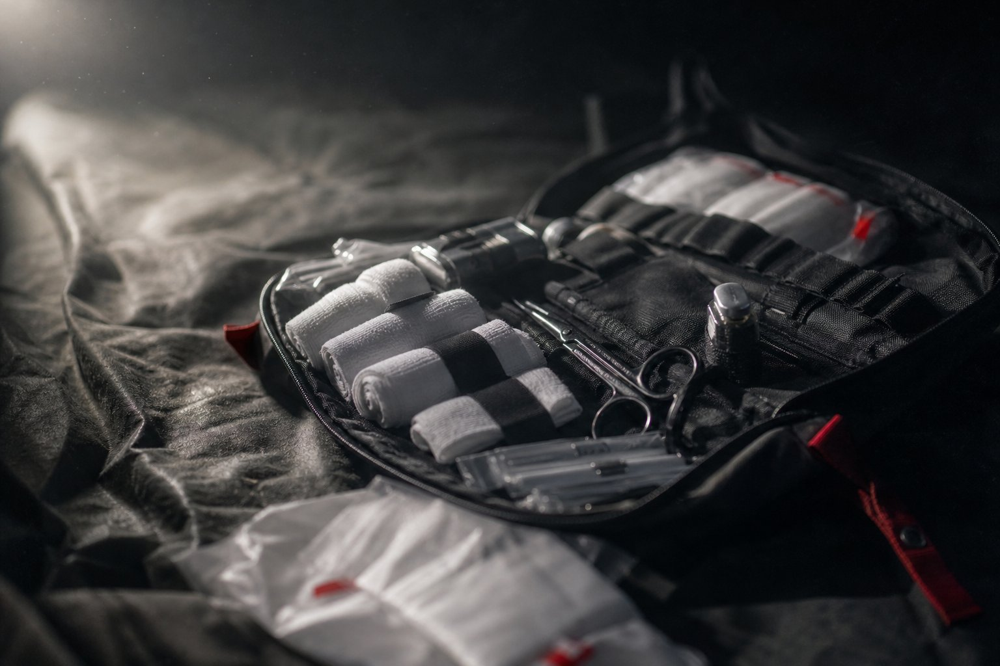

1. Les 4 états de blessure
| État | Symptôme | Ce qui le guérit | Ce qui ne marche PAS |
|---|---|---|---|
| Douleur | Visée et course dégradées | Antalgiques (painkillers) | — |
| Hémorragie | Perte de PV continue, indicateur « wounded » | Pansements — et les medkits haut de gamme traitent aussi le saignement | Un simple medkit ne referme pas la plaie |
| Membre cassé (noir) | PV du membre à 0,Propagation aux vitaux | Kit chirurgical | Bandages et medkits ne réparent pas un membre cassé |
| Blessure légère | PV du membre diminués, pas de saignement | Medkit | — |
La cascade qui tue
Un membre qui tombe à 0 PV devient noir. Tant qu'il est noir, les dégâts se propagent aux vitals et tuent. Et un kit chirurgical ne remet le membre qu'à 1 PV : il faut ensuite un medkit pour le restaurer. D'où l'ordre obligatoire.
2. L'ordre de soin qui sauve des raids
- Antalgique d'abord — il vous permet de fuir sans que la douleur gêne. Idéalement avant le combat, pour vous concentrer sur le gunfight.
- Pansement — on stoppe le saignement. Un membre qui saigne en continu peut re-casser ce que vous venez de réparer.
- Kit chirurgical — on répare le membre cassé.
- Medkit — on restaure les PV.
- Boisson — on répare l'hydratation.
La touche V ouvre la roue de soins ; un appui long déclenche l'usage automatique des objets que vous avez. Pratique, mais dangereux : l'auto-usage peut utiliser un antalgique alors que vous vouliez un pansement. Utilisez la roue manuellement en situation tendue.
3. Les trousses de secours
| Trousse | PV rendus | Temps | Traite l'hémorragie | Hydratation | Taille |
|---|---|---|---|---|---|
| Simple First Aid Pack | 80 | 2 s | Non | −8 | 1×1 |
| Standard First Aid Kit | 120 | 2,1 s | Non | −6 | 1×1 |
| 926 Rapid First Aid Kit | 220–270 | 3,5 s | Non | −22 | 2×1 |
| E3 Military Medkit | 300 | 4,1 s | Non | −15 | 2×1 |
| 100D Battlefield Medkit | 400 | 4,1 s | Oui | 0 | 2×1 |
| TMK Field Medkit | 960 | 4,1 s | Oui | −48 | 2×2 |
| STO First Aid Set | 1200 | 3,3 s | Oui | 0 | 2×2 |
Un membre noirci ne se répare pas avec un bandeau
Quand un membre arrive à 0 PV, il passe noirci (Blacked Out). Un bandeau, une trousse ou un medkit ne le réparent pas : ces objets s'appliquent à un membre blessé, pas à un membre noirci. La seule chose qui le remet en état est le kit chirurgical (Surg-Kit), utilisé sur le membre noirci lui-même. Un medkit ne restaure que les PV du membre, une fois qu'il n'est plus noirci.
La séquence correcte est donc : kit chirurgical d'abord pour débloquer le membre, puis medkit pour lui rendre ses PV. Inverser l'ordre est la mistake la plus répandue, et elle coûte la sortie : on FIGE sur place, on se fait abattre, et on repart sans rien.
Conséquence tactique directe : un membre noirci vous ralentit à l'amble. Vous courez moins vite, votre bruit change, et vous devenez la cible la plus facile de la zone. Dans une zone infectée de Saison 7, où le son attire les horde, c'est souvent ce qui décide du raid. Deux antalgiques au minimum dans la trousse, et un kit chirurgical par membre apparaissent indispensable dès que la zone est bruyante.
Source : guides de survie S7 et retours de joueurs (r/ArenaBreakoutInfinite). Donnée communautaire, non publiée par l'éditeur.
Le classement de la communauté
100D Battlefield Medkit en tête : aucune perte d'hydratation, 2 slots seulement, ~35 PV/s. STO First Aid Set juste derrière (4 slots, mais 4× la couverture et 10 PV/s de plus, pour le même prix). Budget serré : E3 Military Kit. Pour les longs raids : le STO.
4. Les kits chirurgicaux
| Kit | Usages | Temps | Pénalité PV max | Taille |
|---|---|---|---|---|
| Simple Surgical Pack | 1 | 18 s | −60 % | 1×1 |
| Standard Military Surgical Kit | 4 | 13 s | −40 % | 2×1 |
| TMK Military Surgical Kit | 8 | 15 s | −20 % | 3×1 |
| STO Battlefield Surgical Set | 12 | 16 s | Aucune pénalité | 2×2 |
Le TMK, meilleur rapport de la communauté
8 usages, seulement −20 % de PV maximum par membre et 3 slots. Le Standard Military Surgical Kit très répandu offre les mêmes 8 usages mais en 4 slots et avec −40 % de PV mangés — pour 3 000 Koen de plus seulement. Le STO reste le meilleur objet du jeu, mais il coûte 4 slots.
5. Les antalgiques
| Antalgique | Usages | Temps d'activation | Durée d'insensibilisation | Hydratation |
|---|---|---|---|---|
| Fast-Acting Painkiller | 3 | 3,5 s | 180 s | −10 |
| AP Painkiller | 6 | 5,5 s | 210 s | −10 |
| EX Painkiller | 8 | 5,5 s | 300 s | −10 |
| Anti-Inflam Painkiller | 3 | 3,5 s | 60 s | −6 |
| Liquid Painkiller | 1 | 6 s | 270 s | 0 |
| Energy Drink | 1 | 6 s | 240 s | 0 |
L'EX Painkiller est le plus durable (5 minutes) et supporte 8 usages : le meilleur de la liste. L'Anti-Inflam est souvent déconseillé — 60 secondes ne suffisent pas à se désengager. Le Liquid Painkiller et l'Energy Drink sont monoprix, sans coût d'hydratation, parfaits en economy.
6. Les pansements
| Pansement | Usages | Temps | Poids |
|---|---|---|---|
| Quick Bandage | 1 | 6,8 s | 0,04 kg |
| Field Bandage | 2 | 6,8 s | 0,06 kg |
| OPM Bandage | 4 | 6,8 s | 0,08 kg |
Les pansements sont peu chers : l'OPM en 4 usages est le standard. À noter : certains medkits haut de gamme (100D, TMK, STO) traient aussi l'hémorragie — c'est ce qui les rend supérieurs à un duo bandage + petit medkit.
7. Les stimulants
| Stimulant | Effet | Durée |
|---|---|---|
| Regen Booster | Restauration continue des PV sur tous les membres | 300 s |
| Regen Injection | Idem + capacité de port augmentée | 180 s |
| Endurance Booster | Endurance max augmentée, coût réduit, régénération accélérée | 300 s |
| Strength Booster | Capacité de port augmentée | 300 s |
| Sensory Enhancer F | Amélioration de l'audition | 180 s |
Les stimulants ont un coût
Tous les stimulants coûtent de l'énergie (−3 à −5) et de l'hydratation (−3 à −5). La Regen est un luxe de raid long : entre deux combats, un medkit instantané est presque toujours plus rentable. Portez-la pour les raids à sac lourd, où l'endurance est votre ennemie.
8. Le médical en Saison 7
- Traitement Y40 (Experimental Ultra-Strength Treatment) — un stimulant experimentally classé, craftable, qui donne une régénération accélérée et peut même réparer des membres cassés. Reddit le décrit comme « de la Wolverine » : il guérit plus vite et répare les membres. Durée courte mais très fort.
- Battlefield First Aid Kit Set F — soin d'un coéquipier downed : indispensable en squad, inutile en solo.
- G-96 Nebulizer — protection pulmonaire et traitement des lésions pulmonaires pendant 30 s. Sans usage réel tant que les grenades à gaz ne sont pas dans le meta.
- Réactifs expérimentaux (zone infectée) — Pathfinder (+PV de torse), Messenger (+vitesse), Cornered Beast (les blessures sévères à la tête ou au torse vous mettent à terre au lieu de vous tuer) : les trois augmentent aussi les dégâts subis des mutants et votre probabilité d'être détecté, et aucun ne peut être extrait du raid.
- La fumigène de soin de la S7 restaure progressivement la santé dans une zone : l'outil de soutien du squad en zone contaminée.
Le kit médical rentable — l'avis Reddit
« 100D Battlefield Medkit (400 PV, 2 slots, traite le saignement) + un kit chirurgical. » En budget : le kit chirurgical noir 4 usages. Et une règle d'or de la communauté : ne jamais dépasser 20 % de votre stash dans un seul kit. Avec 500 000 Koen en banque, votre kit total (arme + armure + munitions + médical) ne devrait pas dépasser 100 000 Koen. Mourir avec un kit surdimensionné casse votre dynamique économique.
9. Check-list médical avant extraction
- Au moins un kit chirurgical — sans lui, un membre cassé est une mort retardée.
- 2 à 4 pansements — l'hémorragie tue plus vite que la blessure.
- 1 antalgique EX — pour fuir.
- 1 medkit 100D — pour tenir la différence après le soin.
- Et de l'espace : un sac Medical Case vaut de l'or dans une zone à horde.
Pour le budget global, voir le guide Koen & économie. Pour les zombies, l'antalgique est vital : en Endless, rester debout 3 secondes de plus vaut un tank.